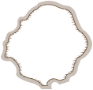
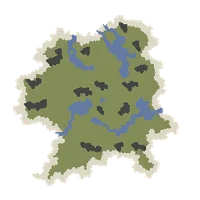
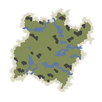
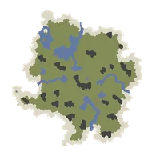
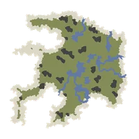
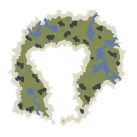

หน้าแรก › โลกและการเดินทาง
เกาะและการเดินทาง ใช้ได้
ประเภทเกาะ (แองคอร่า เซฟเฮ้าส์ เกาะเทม เกาะผันแปร เกาะอารยธรรม เกาะไร้กฎ) · อายุเกาะผันแปร · แคมป์บนเกาะไม่เสถียร · เกาะเทมขยาย 1024 · เกาะเทมรวม/ส่วนตัวของ Supporter · ล่องเรือ บอลลูน กลับเกาะเสถียร · เลเวลเกาะ ค่าดัชนีแปรผัน และความอันตราย
บางหัวข้อในหน้านี้ยังไม่เสร็จ
โลกของ Durango คือหมู่เกาะกลางทะเล แต่ละเกาะมี เลเวล และ สภาพภูมิอากาศ ของตัวเอง บางเกาะปลอดภัยและอยู่ถาวร (ตั้งบ้านได้) บางเกาะเป็น เกาะผันแปร ที่อันตรายกว่าแต่ของดีกว่า และมีอายุจำกัด ทุกคนในเซิร์ฟอยู่บนโลกเดียวกัน — เจอกัน ช่วยกัน และแข่งกันเก็บของบนเกาะเดียวกัน

ทำอะไรได้บ้าง
- เริ่มเกมที่ แองคอร่า → ต่อแพ → ไปถึง เซฟเฮ้าส์ของคอมปะนี
- ขึ้น บอลลูนลมร้อน ไปรับ เกาะเทม ของตัวเอง แล้วประกาศ อาณาเขต · ผู้มียศ Supporter ได้ เกาะเทมรวม Supporter (เกาะใหญ่ 10 ภูมิประเทศ) หรือเลือกเกาะเทมส่วนตัวที่เลือกได้ว่าใครเข้าเกาะได้
- ล่องเรือจากท่าเรือไป เกาะผันแปร 8 ภูมิอากาศ เลเวล 15–60 เพื่อหาของและล่าสัตว์ — เกาะผันแปรอยู่ได้ 12 ชั่วโมง – 3 วัน แล้วหายไปและเกิดเกาะใหม่แทน · เกาะส่วนใหญ่มี แคมป์ ให้รับภารกิจ/สนับสนุนเทคนิค และกลับมาได้ฟรีด้วยปุ่ม «กลับแคมป์» บนแผนที่
- เลือกความยากเองด้วย ค่าดัชนีแปรผัน 1–10 ของแต่ละเกาะ
- เลเวล 56 ขึ้นไป ล่องเรือไป เกาะไร้กฎ ที่ผู้เล่นตีกันได้ — เกาะไร้กฎ (PvP)
- กลับบ้านได้ฟรีทุกเมื่อด้วย ออกเรือไปที่เกาะเสถียรล่าสุด หรือปุ่มวาร์ปใน วาร์ปและรอยแยก
ประเภทของเกาะ
| ประเภท | เลเวลเกาะ | ประกาศอาณาเขต | ค่าดัชนีแปรผัน | ความล้าจากเกาะ | อายุเกาะ |
|---|---|---|---|---|---|
| แองคอร่า (เกาะเริ่มต้น) | 1 | ไม่ได้ | 1 (เสถียร) | ไม่มี | ถาวร |
| เซฟเฮ้าส์ของคอมปะนี | 5 | ไม่ได้ | 1 (เสถียร) | ไม่มี | ถาวร |
| เกาะเทม | 10 | ได้ (ขยายฟรี) | 1 (เสถียร) | ไม่มี | ถาวร |
| เกาะเทมรวม Supporter | 10 | ได้ (1 แปลง) | 1 (เสถียร) | ไม่มี | ถาวร |
| เกาะผันแปร | 15–60 | ไม่ได้ | 1–10 | มี | 12 ชั่วโมง – 3 วัน |
| เกาะฝึก (ป่าเขตร้อน) | 18 | ไม่ได้ | 1 (เสถียร) | ครึ่งเดียว | ถาวร |
| เกาะอารยธรรม (เมืองร้าง) | 40 | ได้ | 1 (เสถียร) | ครึ่งเดียว | ถาวร |
| เกาะอีเวนต์ | 20–60 | ไม่ได้ | 1 | มี | 12 ชั่วโมง – 3 วัน |
| เกาะไร้กฎ (PvP) | 60 (เข้าได้ตั้งแต่ Lv56) | ไม่ได้ | 1 | มี | ถาวร |
แองคอร่า (เกาะเริ่มต้น) ใช้ได้
ตัวละครใหม่ทุกตัวเริ่มที่ แองคอร่า — เกาะบทเรียนที่สร้างตามแผนที่จริงของเกมต้นฉบับ ทำตามบทเรียนแล้ว ต่อแพ ให้เสร็จ (ท่อนซุง 4 · ก้านต้นกก 6) แพจะพาไปขึ้นฝั่งที่เซฟเฮ้าส์ · ตัวใหม่เริ่มในสภาพบาดเจ็บเล็กน้อย — ดู ตัวละครใหม่เริ่มบาดเจ็บ
- ฉากปรับให้เหมือนเกมต้นฉบับ (ภาพเกมปี 2019): ลานกองไฟมีลานถนนเก่า กองยางรถยนต์ และ Charlie ยืนรออยู่หลังกองไฟ · ชายหาดมีผู้รอดชีวิตนั่งรอบกองไฟเล็ก ซากสัตว์ นั่งร้านและกองยาง · ผู้รอดชีวิตคนอื่นย้ายไปอยู่ข้างแพ · เพิ่มอินทผลัมต้นที่ 2 ดงเฟิร์นรังนก ต้นกก และหอยบนชายหาด
- ทรัพยากรจัดวางใหม่ให้ใกล้ต้นฉบับ: ของทุกชิ้นอยู่บนพื้นที่เดินถึงได้ ไม่มีบนหน้าผาหรือที่ราบสูงที่ขึ้นไม่ได้ · จุดบทเรียนมีของครบ (อินทผลัมที่ตู้รถไฟ · กกที่ลำธาร · หินริมทะเลสาบ · กิ่งไม้และหินที่กองไฟ · ต้นไม้ให้ท่อนซุงและกกรอบทะเลสาบเล็กข้างแพ) — ดูรายละเอียดที่ เริ่มต้นเล่น
- จำนวนของและความเร็วที่ของกลับมาเท่าเกาะอื่น (ไม่มีตัวคูณพิเศษแล้ว)
- นั่งพักที่ กองไฟบนแองคอร่า ความเหนื่อยล้าหมดใน 5 วินาที ไม่ว่าหลอดจะยาวแค่ไหน (นั่งพัก)
- สัตว์: แบรคิโอซอรัสอยู่ในทะเลสาบเท่านั้น · คอมพ์ซอกนาธัส 3 ฝูง ใกล้หุบจุดเกิดและริมลำธาร — ไม่ดุ โดนตีแล้ววิ่งหนี เหมาะเป็นเหยื่อตัวแรก (คอมพ์ซอกนาธัสบนแองคอร่าและเซฟเฮ้าส์) · อีก 2 ตัวที่ตู้รถไฟเป็นโมเดลประกอบฉาก
- ล่องเรือกลับมาเที่ยวแองคอร่าได้จากท่าเรือ แต่ ออกจากเกาะได้ทางแพเท่านั้น ต้องต่อแพใหม่ทุกครั้ง
เซฟเฮ้าส์ของคอมปะนี ใช้ได้
ศูนย์กลางของผู้เล่นใหม่ — มี K และคนของคอมปะนี โต๊ะช่าง กองไฟ กระดานประกาศ ท่าเรือ สถานีบอลลูน และ หลุมวาร์ป ที่ใช้ได้ทันทีโดยไม่ต้องหา ถ้าไม่ได้ตั้ง จุดพัก ไว้ที่ไหน เซฟเฮ้าส์คือ "บ้าน" ของคุณ · รอบจุดขึ้นเกาะมีฝูง คอมพ์ซอกนาธัส ที่ไม่ดุให้ล่า
เกาะเทม ใช้ได้
เกาะหญ้าเลเวล 10 สำหรับตั้งหลักปักฐาน — ประกาศอาณาเขต สร้างบ้าน ปลูกผัก เลี้ยงสัตว์ ขยายอาณาเขตบนเกาะเทม ฟรี และไม่มีความล้าจากภูมิอากาศของเกาะ
เกาะเทมไม่มีสัตว์ป่าเลย — ไม่มีไดโนเสาร์หรือบอสเกิด เป็นเกาะปลอดภัยสำหรับสร้างบ้านและทำฟาร์ม · สัตว์เลี้ยงและสัตว์ในกรงของคุณอยู่ได้ตามปกติ · อยากล่าหรือจับสัตว์ต้องไปเกาะอื่น
เกาะเทมเป็นโลกที่ใช้ร่วมกัน — ทุกคนที่เลือกเกาะแบบเดียวกันอยู่บนเกาะเดียวกัน เห็นกัน แวะไปดูบ้านกันได้ เหมือนหมู่บ้านที่ทุกคนมาจับจองที่ดินคนละแปลง ที่ที่มีคนประกาศแล้วจะขึ้นว่ามีเจ้าของ ต้องหาที่ว่างถัดไป (ผู้มียศ Supporter เลือกใช้เกาะเทมส่วนตัวแทนได้ — หัวข้อด้านล่าง)
ไปเกาะเทมครั้งแรกทาง บอลลูนลมร้อน ที่เซฟเฮ้าส์ (หัวข้อบอลลูนด้านล่าง) · เลือกแบบเกาะได้ 5 แบบ (หัวข้อถัดไป)
เกาะเทมขยายเป็น 1024 ใช้ได้
เกาะเทมทั้ง 5 แบบขยายเป็น 1024 × 1024 ไทล์ (16 เท่าของเดิม 256 × 256) — เกาะเดิมอยู่กลางแผนที่
- บ้าน สิ่งก่อสร้าง ที่ดิน กล่อง/คลัง กรง สัตว์เลี้ยง และของในน้ำ อยู่ที่เดิมครบ ไม่ต้องย้ายอะไร
- ทะเลรอบเกาะเดิมกลายเป็นทุ่งหญ้าผืนเดียวกับส่วนที่ขยาย มีแม่น้ำ/ทะเลสาบ และของเก็บได้แบบเดียวกับเกาะเดิม · ท่าเรืออยู่ที่เดิม (มีอ่าวเล็กรอบท่า) · ปลาในส่วนใหม่มีน้อย (ปลารวมต่อเกาะเท่ากับก่อนขยาย)
- หลุมวาร์ป 5 จุด (4 ทิศ + กลางเกาะ) ใช้ได้ทันทีที่มาถึง ไม่ต้องสำรวจ (วาร์ปและรอยแยก) · สถานีบอลลูน 1 จุดข้างท่าเรือ บินอิสระได้ฟรี
- ผู้เล่นที่ยังไม่มีที่ดินบนเกาะเทม จะมาถึงตรง ช่องว่างที่ใกล้ท่าเรือที่สุด ประกาศที่ดินได้ทันที (คนมาทีหลังได้ที่ถัดออกไปเรื่อย ๆ)
- เกาะเทมส่วนตัวของ Supporter ขยายแบบเดียวกัน
เลือกแบบเกาะเทม ใช้ได้
ครั้งแรกที่กด ออก ที่สถานีบอลลูน หน้า เป็นเจ้าของเกาะเทม ให้เลือกแผนที่เกาะหญ้าได้ 5 แบบ แต่ละแบบแผนที่ไม่เหมือนกัน
    
- เลือกได้ ครั้งเดียว — เลือกแล้วเปลี่ยนแบบไม่ได้
- ใครมีเกาะเทมอยู่แล้วได้เกาะเดิมต่อ ไม่ถูกย้าย
- แต่ละแบบเป็นโลกร่วมของตัวเอง — คนที่เลือกแบบเดียวกันอยู่ด้วยกัน
- ทุกแบบกติกาเดียวกัน: เลเวล 10 · ค่าดัชนี 1 · ไม่มีสัตว์ป่า · ขยายอาณาเขตฟรี
เกาะเทมรวม Supporter ใช้ได้
ผู้มียศ Supporter ได้ เกาะเทมรวม Supporter — เกาะใหญ่ 1024 × 1024 ไทล์ รวม 10 ภูมิประเทศ ในเกาะเดียว: ภูเขาไฟอยู่ตรงกลางเกาะเป็นวงกลม ล้อมรอบด้วยทุ่งหญ้า · ทุ่งหิมะ · ทุนดรา · ป่าอบอุ่น · สะวันนา · ทะเลทราย · ป่าเขตร้อน · ป่าเขตร้อนสีคราม · บึง · Supporter ทุกคนอยู่เกาะเดียวกัน (ผู้เล่นทั่วไปประกาศที่ดินบนเกาะนี้ไม่ได้)
- เลเวล 10 ทั้งเกาะ · ค่าดัชนี 1 · ไม่มีความล้าจากเกาะ · มีแต่ สัตว์กินพืชตัวเล็ก ของแต่ละภูมิประเทศให้จับ/เทม ไม่มีนักล่า · ไม่มีฝูงปลาและฝูงกุ้งในทะเล (ลอบดักปลาที่ผู้เล่นสร้างยังใช้ได้)
- ท่าเรือ 4 มุมเกาะ ทุกท่ามีฐานภาคสนาม: ศูนย์สื่อสาร (ภารกิจ/ขอสนับสนุนองค์กร/สนับสนุนเทคนิค) · โกดังเสบียง · กระดานภารกิจ · กองไฟ · สถานีบอลลูน บินอิสระ
- หลุมวาร์ป 14 จุด (กลางแต่ละภูมิประเทศ + ข้างท่าเรือ) · เวลากลางวัน/กลางคืนปกติ
- Supporter ที่ยังไม่เคยพิมพ์
/tamedจะไปเกาะนี้ตอนไปเกาะเทมครั้งหน้า · บ้าน/ที่ดินเดิมบนเกาะเทมร่วมหรือเกาะส่วนตัวอยู่ที่เดิมครบ ไม่ถูกลบหรือย้าย · บนเกาะนี้ประกาศที่ดินใหม่ได้ 1 แปลง - ผู้เล่นอื่นเยี่ยมที่ดินของคุณบนเกาะนี้ได้ตามสิทธิ์ที่คุณเปิดไว้ (เยี่ยมเกาะเทมส่วนตัว)
เกาะเทมส่วนตัว (Supporter) ใช้ได้
ผู้มียศ Supporter เลือกใช้ เกาะเทมส่วนตัว ได้ — แผนที่แบบเดียวกับที่เลือกไว้ แต่เป็นของตัวละครนั้นคนเดียว ผู้เล่นอื่นมองไม่เห็นและเข้าไม่ได้ (ยกเว้นคนที่คุณอนุญาต — หัวข้อถัดไป) · ยังอยู่ในเซิร์ฟเดียวกับทุกคน แชท เพื่อน แคลน และตลาดใช้ร่วมกันตามปกติ
- แยกต่อตัวละคร · กติกาเกาะเหมือนเกาะเทมร่วม (เลเวล 10 · ไม่มีสัตว์ป่า · ขยายอาณาเขตฟรี)
- สลับด้วยการพิมพ์ในแชท:
/tamed supporter= เกาะเทมรวม Supporter (ค่าเริ่มต้นสำหรับคนที่ยังไม่เคยเลือก) ·/tamed private= เกาะส่วนตัว ·/tamed shared= เกาะเทมร่วม · พิมพ์ตอนยืนบนเกาะเทม = ย้ายทันที · พิมพ์ที่อื่น = มีผลครั้งหน้าที่ไปเกาะเทม - บ้านและของที่สร้างไว้บนเกาะเทมร่วมอยู่ที่เดิมครบ — เกาะส่วนตัวเริ่มว่าง (ย้ายที่ดินเดิมมาได้ 1 ครั้ง — หัวข้อ «ย้ายที่ดินเข้าเกาะส่วนตัว»)
- เช็กยศทุกครั้งที่เข้าเกม — ยศหมดแล้ว รอบถัดไปจะไปเกาะเทมร่วม ของบนเกาะส่วนตัวเก็บไว้ครบ ได้ยศคืนก็กลับไปได้
- ผู้เล่นทั่วไปใช้เกาะเทมร่วมเหมือนเดิม
เยี่ยมเกาะเทมส่วนตัว ใช้ได้
เจ้าของเกาะ (Supporter) ตั้งว่าใครเข้าได้ ที่หน้าต่าง การอนุญาตเข้าเกาะ (หน้าอาณาเขตบนเกาะส่วนตัว) — เลือก สมาชิกแคลน · เพื่อน · คนนอก ได้หลายกลุ่มพร้อมกัน («คนนอก» = ทุกคน)
- ค่าเริ่มต้น = ปิดหมด เข้าได้แค่เจ้าของ
- ปิดกลุ่มไหน คนกลุ่มนั้นที่อยู่บนเกาะถูกส่งกลับเกาะเทมของตัวเองทันที
- รับคนเยี่ยมพร้อมกันได้ 20 คน (ไม่นับเจ้าของ) · เจ้าของออฟไลน์อยู่ คนที่ได้รับอนุญาตก็ยังเข้าได้ · เจ้าของออนไลน์ได้ข้อความเมื่อมีคนมาถึง
- ไล่คนเยี่ยม: แตะตัวเขาบนเกาะของคุณ → ปุ่มไล่ออกจากเกาะ → เขาถูกส่งกลับเกาะเทมของตัวเอง · บล็อก เขา = ถูกส่งกลับทันทีและเข้าเกาะคุณไม่ได้อีก
ไปเยี่ยม — ใช้เมนูล่องเรือที่ท่าเรือ (การแล่นเรือแบบสุ่ม) · ไปถึงที่จุดขึ้นเกาะ
- บนเกาะคนอื่น: เดิน คุย เก็บของธรรมชาติได้ · ในที่ดินของเจ้าของใช้สิทธิ์ที่เจ้าของตั้งไว้ (ปกติคนนอกสร้าง/เปิดกล่อง/กรงไม่ได้) · ประกาศที่ดินของตัวเองและสร้างของนอกที่ดินเจ้าของไม่ได้
- เยี่ยมได้เฉพาะเกาะเทมส่วนตัวของ Supporter (เกาะเทมร่วมเป็นของทุกคนอยู่แล้ว)
ย้ายที่ดินเข้าเกาะส่วนตัว ใช้ได้
Supporter ย้ายที่ดินบนเกาะเทมร่วมเข้าเกาะส่วนตัวได้ 1 ครั้งต่อตัวละคร (ไม่มีวันหมดเขต) — บ้าน สิ่งปลูกสร้าง กล่องพร้อมของข้างใน กรงและสัตว์ในกรง ไปวางที่ ตำแหน่งเดิม บนเกาะส่วนตัว
- พิมพ์
/tamed moveในแชท → เกมสรุปให้ดูว่าจะย้ายอะไรบ้าง - พิมพ์
/tamed move confirmภายใน 60 วินาที เพื่อยืนยัน (/tamed move cancel= ยกเลิก)
- ทำได้เมื่อเกาะส่วนตัวยังไม่มีที่ดิน · มีของบนเกาะส่วนตัวทับตำแหน่งเดิม = เกมบอกให้รื้อก่อน · ย้ายไม่สำเร็จ/ไม่มีที่ดินบนเกาะร่วม = ไม่เสียสิทธิ์ ของอยู่ที่เดิมครบ
- ของที่เพื่อนสร้างไว้ในที่ดินคุณย้ายไปด้วย · สัตว์ของคนอื่นที่ฝากในกรงคุณกลับไปหาเจ้าของ · ของนอกที่ดินไม่ถูกย้าย
- ยืนบนเกาะเทมร่วมตอนยืนยัน = ถูกพาไปเกาะส่วนตัวทันที · หลังย้าย ปุ่มเกาะเทมพาไปเกาะส่วนตัว
K และ D383 บนเกาะเทม ยังไม่เสร็จ
ระหว่างเล่นเนื้อเรื่องเอพิค K และเจ้าหน้าที่ D383 โผล่บนเกาะเทมของคุณเอง ตามขั้นเควส
- โผล่ที่จุดตายตัวบน ทุ่งหญ้าส่วนใหม่ของเกาะเทมที่ขยายเป็น 1024 ซึ่งไกลจากท่าเรือมาก (ราว 540 ไทล์) — เดินตามลูกศรนำทางของเกม
- โผล่เฉพาะเกาะเทมของตัวเอง — เกาะเทมรวม Supporter และเกาะของคนอื่นที่ไปเยี่ยมไม่มี
- จบบท 8 แล้วชมหนังตอนจบ เกมพากลับเกาะเทมของคุณให้เอง
เกาะผันแปร ใช้ได้
เกาะที่ต้องล่องเรือไป — มีของเลเวลสูงและสัตว์ดุ เกาะเลเวล 20 ขึ้นไปส่วนใหญ่มี รอยแยก และหลุม เกาะเลเวลสูงหรือค่าดัชนีสูงจะอันตรายขึ้นเรื่อย ๆ ประกาศอาณาเขตไม่ได้ · ทุกเกาะ มีอายุ (หัวข้อถัดไป)
เกาะชุดใหม่ 37 ลูก (เจนแผนที่ใหม่ทั้งหมด) เพิ่ม 10 พื้นที่ พื้นที่ละ 4 ลูก ค่าดัชนี 1 · 4 · 7 · 10 (ป่าอบอุ่น 20 มีลูกเดียว): ป่าอบอุ่น 20 · ทุนดรา 40 · บึงลึก 45 · ทะเลทราย 50 · บึงลึก 55 · ป่าเขตร้อนสีคราม 55 · ทุ่งหิมะ 60 · ทะเลทราย 60 · ป่าเขตร้อน 60 · ทุนดรา 60 — แต่ละลูกมีแผ่นดินราว 40% มีแม่น้ำ ทะเลสาบ หน้าผา หลุมวาร์ป 5 จุด หลุมอุกกาบาต 6 หลุม รอยแยก 2 แห่ง และแคมป์ · ชื่อบนเกาะเป็นภาษาไทย เช่น «ทุนดรา 40-1»
ทุกเกาะไม่เสถียรมีสัตว์ประจำถิ่น คลังรอบหลุม และจ่าฝูงตามตารางเกาะของเกมต้นฉบับ จึงแต่ละทะเลมีชนิดสัตว์เป็นของตัวเอง · เกาะ ป่าเขตร้อนสีคราม 55 มีพืช/หินชุดเฉพาะ 23 ชนิด
ทะเลสาบและแม่น้ำ — ทะเลสาบบนเกาะเดิม 41 ลูก (ชุด 02–04 เกาะเมือง เกาะไร้กฎ และเกาะอีเวนต์) ที่เคยเห็นแต่พื้นก้นทะเลสาบ ตอนนี้มีผิวน้ำและตลิ่งแล้ว เดินลงไปจะลุยน้ำตามความลึกจริง · ทุกเกาะ (ยกเว้นแองคอร่าที่แสดงเหมือนเดิม): ขอบทะเล ทะเลสาบ แม่น้ำ และทิศน้ำไหลตรงกับพื้นที่น้ำจริงที่ใช้ตักน้ำ/ตกปลา/ว่ายน้ำ (เดิมถูกวาดเยื้อง 1 ช่อง)
| ภูมิอากาศ | เลเวล | จำนวนเกาะ | ชื่อที่ขึ้นในเกม | ค่าดัชนีแปรผัน |
|---|---|---|---|---|
| เซวันนา | 15 | 1 | (ยังไม่มีชื่อ) | 1–10 · +1 ทุกครั้งที่เกาะเกิดใหม่ |
| เขตอบอุ่น | 20 | 1 | ป่าอบอุ่น 20-1 | 1–10 · +1 ทุกครั้งที่เกาะเกิดใหม่ |
| ทุ่งหิมะ | 20 | 1 | ทุ่งหิมะน้อย | 1–10 · +1 ทุกครั้งที่เกาะเกิดใหม่ |
| เขตร้อน | 25 | 1 | (ยังไม่มีชื่อ) | 1–10 · +1 ทุกครั้งที่เกาะเกิดใหม่ |
| ทุนดรา | 30 | 1 | (ยังไม่มีชื่อ) | 1–10 · +1 ทุกครั้งที่เกาะเกิดใหม่ |
| เขตอบอุ่น | 35 | 4 | ป่าอบอุ่น 1–4 | 1 · 4 · 7 · 10 |
| ทะเลทราย | 35 | 4 | ทะเลทราย 1–4 | 1 · 4 · 7 · 10 |
| เขตร้อน | 40 | 4 | ป่าเขตร้อน 1–4 | 1 · 4 · 7 · 10 |
| ทุนดรา | 40 | 4 | ทุนดรา 40-1 – 40-4 | 1 · 4 · 7 · 10 |
| เซวันนา | 45 | 4 | สะวันนา 1–4 | 1 · 4 · 7 · 10 |
| หนองน้ำ | 45 | 4 | บึงลึก 45-1 – 45-4 | 1 · 4 · 7 · 10 |
| ทะเลทราย | 50 | 4 | ทะเลทราย 50-1 – 50-4 | 1 · 4 · 7 · 10 |
| ทุ่งหิมะ | 50 | 4 | ทุ่งหิมะ 1–4 | 1 · 4 · 7 · 10 |
| เขตร้อน | 55 | 4 | ป่าเขตร้อนสีคราม 55-1 – 55-4 | 1 · 4 · 7 · 10 |
| ทุนดรา | 55 | 4 | ทุนดรา 1–4 | 1 · 4 · 7 · 10 |
| หนองน้ำ | 55 | 4 | บึงลึก 55-1 – 55-4 | 1 · 4 · 7 · 10 |
| เขตร้อน | 60 | 4 | ป่าเขตร้อน 60-1 – 60-4 | 1 · 4 · 7 · 10 |
| ทะเลทราย | 60 | 4 | ทะเลทราย 60-1 – 60-4 | 1 · 4 · 7 · 10 |
| ทุนดรา | 60 | 4 | ทุนดรา 60-1 – 60-4 | 1 · 4 · 7 · 10 |
| ทุ่งหิมะ | 60 | 4 | ทุ่งหิมะ 60-1 – 60-4 | 1 · 4 · 7 · 10 |
| หนองน้ำ | 60 | 4 | บึงลึก 1–4 | 1 · 4 · 7 · 10 |
| ภูเขาไฟ | 60 | 4 | ภูเขาไฟ 1–4 | 1 · 4 · 7 · 10 |
เกาะที่มี 4 ลูก — เลขท้ายชื่อบอกค่าดัชนี: ลูกที่ 1 = 1 · ลูกที่ 2 = 4 · ลูกที่ 3 = 7 · ลูกที่ 4 = 10 (คงที่ ไม่หมุน)
อายุของเกาะ ใช้ได้
เกาะผันแปรและเกาะอีเวนต์อยู่ได้ 12 ชั่วโมง – 3 วัน แล้วแต่เกาะ แต่ละเกาะหมดอายุไม่พร้อมกัน ดูเวลาที่เหลือได้ที่ อายุของเกาะ บนแผนที่
| เวลา | เกิดอะไร |
|---|---|
| เหลือ 1 ชั่วโมง และ 10 นาที | ข้อความ «เกาะจะหายไปหลังจาก …» |
| หมดอายุ | «เกาะจะหายไปเร็ว ๆ นี้ กำลังกลับไปที่จุดพักของคุณใน …» นับถอยหลัง 60 วินาที แล้วพากลับจุดพัก (เกาะบ้าน · ไม่มี = เซฟเฮ้าส์) · ตายอยู่ = ชุบให้ฟรีแล้วพากลับ |
| หลังหมดอายุราว 1.5 นาที | เกาะใหม่เกิดแทน — ระหว่างนี้ล่องเรือเข้าเกาะนั้นไม่ได้ |
- ของที่ทิ้งไว้บนเกาะหายไปกับเกาะ: สิ่งก่อสร้าง บ้าน กล่องและของในกล่อง แคมป์ที่ผู้เล่นตั้งเอง ที่ดิน ของที่ทิ้งพื้น — ยกเว้น สัตว์เลี้ยง (กลับมาอยู่กับเจ้าของ) และ ยานพาหนะ (ย้ายไปวางที่เซฟเฮ้าส์)
- เกาะใหม่: ทรัพยากรกลับเต็ม · สัตว์เกิดใหม่ทั้งเกาะ · คลังบนหลุมสุ่มใหม่ · เกาะเดี่ยวค่าดัชนี +1 · รูปเกาะเหมือนเดิม
- เกาะที่เพิ่งเกิดมีป้าย NEW บนหน้าล่องเรือ 1 ชั่วโมงแรก
- แผนที่ที่ซื้อ/เปิดไว้ หมอก หมุดที่สำรวจ และรางวัลสำรวจครบ เริ่มใหม่กับเกาะใหม่ (แผนที่และการสำรวจ) · กระดานข้อความของเกาะถูกล้าง
- ออกเกมค้างไว้แล้วเกาะหมดอายุ → เข้าเกมครั้งหน้าอยู่ที่จุดพัก พร้อมข้อความ «เกาะหายไปแล้วและคุณได้รับการย้ายไปที่จุดพักของคุณ»
- ไม่มีอายุ: แองคอร่า · เซฟเฮ้าส์ · เกาะเทม (รวมเกาะเทมรวม Supporter) · เกาะฝึก · เกาะอารยธรรม · เกาะไร้กฎ · แคมป์ของเกาะ อยู่ที่เดิมเมื่อเกาะเกิดใหม่
แคมป์บนเกาะไม่เสถียร ใช้ได้
เกาะไม่เสถียรส่วนใหญ่มี แคมป์ ใกล้ท่าเรือ/จุดขึ้นเกาะ (เกาะเลเวล 15–60 รวมเกาะชุดใหม่ทุกลูก · เกาะ «ทะเลทราย/ป่าอบอุ่น/ป่าเขตร้อน/สะวันนา/ทุ่งหิมะ/ทุนดรา 1» และเกาะเดี่ยว 15 · 20 · 25 · 30 ส่วนเกาะชุด 2–4 กับเกาะอีเวนต์มีฐานภาคสนามอยู่เดิม) — ยกเว้น บึงลึก 1 และภูเขาไฟ 1 ที่ไม่มีแคมป์ และเกาะฝึก/เกาะเทม/แองคอร่า
| ชิ้นในแคมป์ | ใช้ทำอะไร |
|---|---|
| สถานีสื่อสาร | รับ/ส่งภารกิจองค์กร (องค์กร) · เมนู «สนับสนุนเทคนิค» (ใบประเมินดัดแปลงอุปกรณ์) |
| คลังแคมป์ | ส่งของภารกิจส่งของ |
| กระดาน | อ่าน/เขียนกระดานของเกาะ |
| กองไฟ | นั่งพัก + คราฟต์ (การเอาตัวรอด) |
| รูวาร์ปขนส่ง | วาร์ปบนเกาะ + ส่งของกลับบ้าน (ขนส่งและพาหนะ) |
- กลับแคมป์ฟรี ด้วยปุ่มบนแผนที่ (แผนที่และการสำรวจ) · ตายบนเกาะที่มีแคมป์แล้วเลือกเกิดนอกหลุมวาร์ป = เกิดใหม่ที่แคมป์ (การตาย)
- ถ้าจุดที่ควรตั้งมีบ้านหรือที่ดินของผู้เล่นอยู่ แคมป์จะย้ายไปที่ว่างใกล้ที่สุดแทน · สร้างของทับแคมป์ไม่ได้ · ต้นไม้/หินที่อยู่ใต้แคมป์ไม่แสดง · ตำแหน่งแคมป์คงเดิมแม้เกาะหมดอายุแล้วเกิดใหม่
เกาะฝึก (ป่าเขตร้อน) ใช้ได้
เกาะเขตร้อนเลเวล 18 ที่มี บทเรียนเอาตัวรอด (หาหลุมอุกกาบาต หาท่าเรือ) ล่องเรือไปได้จากท่าเรือทุกแห่ง ค่าดัชนีคงที่ 1 สัตว์บนเกาะไม่มีนักล่า ความล้าจากเกาะเหลือครึ่งเดียว
เกาะอารยธรรม ใช้ได้
เมืองร้าง 4 แห่ง เลเวล 40 (ทุ่งหญ้า · ป่าอบอุ่น · ป่าเขตร้อน · ทุนดรา) — เกาะเสถียร ประกาศอาณาเขตได้ ความล้าจากเกาะครึ่งเดียว
เกาะอีเวนต์ ใช้ได้
เกาะจากกิจกรรมเก่าของเกม (เทศกาลทุ่งหญ้า · ซัมเมอร์คลับ · เกาะซีซัน 1/2) เปิดเป็นเกาะธรรมดา ค่าดัชนี 1 และมีอายุเหมือนเกาะผันแปร — ถ้าออกเกมค้างไว้บนเกาะอีเวนต์ ครั้งหน้าจะไปเกิดที่บ้าน (ดูหัวข้อ «ออกเกมค้างบนเกาะชั่วคราว» ด้านล่าง)
เกาะไร้กฎ ใช้ได้
เกาะเลเวล 60 จำนวน 5 เกาะ (ภูเขาไฟ · บึง · ทุ่งหิมะ · ป่าอบอุ่น · ป่าเขตร้อน) ที่ ผู้เล่นตีกันได้ — เข้าได้ตั้งแต่ เลเวล 56 · ค่าดัชนี 1 · ไม่มีอายุ · ประกาศอาณาเขตไม่ได้ · รายละเอียดที่ เกาะไร้กฎ (PvP)
เดินทางระหว่างเกาะ
ล่องเรือจากท่าเรือ ใช้ได้
- เดินไปที่ ท่าเรือ แล้วแตะ → เลือก การล่องเรือ
- แผนที่ทะเลเปิดขึ้น — เลือกภูมิอากาศ/เลเวล แล้วเลือกเกาะตามค่าดัชนีที่ต้องการ
- กล่องยืนยัน "คุณต้องการไปที่เกาะ … หรือไม่?" → ตกลง → ไปขึ้นฝั่งที่จุดขึ้นเกาะของเกาะนั้น
- ล่องเรือฟรี ไม่หักทีสโตน และไม่ล็อกเลเวลเกาะ — ไปเกาะเลเวล 60 ตั้งแต่เลเวล 1 ก็ได้ แต่จะล้าเร็วมาก · ยกเว้น เกาะไร้กฎ ต้องเลเวล 56 ขึ้นไป
- เกาะค่าดัชนี 3 ขึ้นไป ต้องมีค่าต้านทานภูมิอากาศพอ (ตารางด้านล่าง) ไม่งั้นออกเรือไม่ได้ · เกรดบุกเบิกไม่ล็อกเกาะแล้ว ทุกเกรดเลือกค่าดัชนีไหนก็ได้ (เกรดบุกเบิกยังคุมขนาดที่ดิน)
- เกาะที่กำลังเกิดใหม่ (ราว 1.5 นาทีหลังหมดอายุ) ล่องเรือเข้าไม่ได้
- สัตว์เลี้ยงและของในกระเป๋าตามไปด้วยทั้งหมด
- ไปที่ดินของเพื่อนบนเกาะเสถียรโดยไม่ต้องล่องเรือ: แตะผู้เล่น → ปุ่มไปที่ดิน (วาร์ปและรอยแยก)
การแล่นเรือแบบสุ่ม ใช้ได้
เมนูล่องเรือที่ท่าเรือมี 2 ปุ่มสำหรับไปเยี่ยม เกาะเทมส่วนตัว ของผู้เล่นคนอื่น (เยี่ยมเกาะเทมส่วนตัว)
- ไปเกาะเทม → ค้นชื่อผู้เล่น → เลือกคนที่จะไปเยี่ยม
- การแล่นเรือแบบสุ่ม → ไปเกาะของใครสักคนที่เปิดให้ คนนอก เข้าได้และยังไม่เต็ม · ยังไม่มีเกาะที่เปิด = ขึ้นข้อความแจ้ง
ค่าล่องเรือฟรี · เกาะไม่อนุญาต/เต็ม = ไปไม่ได้ พร้อมข้อความบอกเหตุ
เกาะแนะนำและบันทึกเกาะเทม ยังไม่เสร็จ
- ตรวจสอบเกาะที่แนะนำ — ยืนบนเกาะที่ประกาศอาณาเขตได้ แล้วเปิดหน้าอาณาเขต → «ย้ายอาณาเขต» → «ตรวจสอบเกาะที่แนะนำ» จะเห็นเกาะอารยธรรมที่คนบางตาที่สุด (เทียบกับความจุของเกาะ) ขึ้นก่อน (ไม่รวมเกาะที่ยืนอยู่) กดเพื่อเดินทางไปได้เลย
- บันทึกเกาะเทม — เมนูตั้งค่า หมวดบริการ ปุ่ม «บันทึกเกาะเทม» เก็บข้อมูลเกาะเทมของตัวเอง (ที่ดิน สิ่งปลูกสร้างในช่องที่ดิน กระเป๋า) ลงเครื่อง — ทำได้เฉพาะของตัวเองที่มีที่ดินบนเกาะเทมแล้ว · ข้อมูลไม่เกิน 2 MiB · ขอได้ 1 ครั้งต่อ 10 นาที
กลับเกาะเสถียร ใช้ได้
ที่ท่าเรือของเกาะผันแปร มีตัวเลือก ออกเรือไปที่เกาะเสถียรล่าสุด และ "กลับไปที่ท่าเรือบนเกาะเทมที่เป็นจุดเริ่มต้นของคุณหรือไม่?" — ทั้งสองทางพากลับ เกาะบ้าน ทันทีและฟรี
- เกาะบ้าน = เกาะที่คุณ กำหนดให้เป็นจุดพัก ไว้ (เตียง/เต็นท์ของคุณ) · ยังไม่เคยตั้ง = เซฟเฮ้าส์
- ออกจากเกาะใดก็ตาม จุดเช็กพอยต์อัตโนมัติของเกาะเดิมจะหายไป (จุดพักที่เป็นเตียง/เต็นท์ไม่หาย)
บอลลูนลมร้อน ใช้ได้
สถานีบอลลูน ที่เซฟเฮ้าส์มี 2 แบบ
- ออก — ไปเกาะเทมของคุณ (ครั้งแรกจะเปิดหน้า เป็นเจ้าของเกาะเทม ให้เลือกแบบเกาะ 1 ใน 5 ก่อน)
- ขึ้นนั่งบนบอลลูนลมร้อน — บินชมเกาะได้อิสระ บินข้ามน้ำได้ ขึ้นฟรี · บินได้นานสุด 15 นาที แล้วลงอัตโนมัติ · ลงจอดบนน้ำ/หน้าผาไม่ได้จะถูกส่งกลับสถานี
สถานีบอลลูนแบบบินอิสระอย่างเดียวยังมีที่ เกาะเทมทุกแบบ (ข้างท่าเรือ) และ เกาะเทมรวม Supporter (ท่าเรือ 4 มุม) — รายละเอียดที่ ขนส่งและพาหนะ
ออกเดินทางระหว่างต่อสู้ไม่ได้ ยังไม่เสร็จ
เหมือนเกมต้นฉบับ: ระหว่างอยู่ใน โหมดต่อสู้ ออกจากเกาะหรือวาร์ปที่กดเองไม่ได้ — ล่องเรือ · ล่องเรือกลับ/กลับเกาะเสถียร · วาร์ปไปท่าเรือ · กลับแคมป์ · กลับจุดพัก/กลับที่ดิน · รูวาร์ป · เยี่ยมที่ดินหรือเกาะเทมของเพื่อน · การแล่นเรือแบบสุ่ม
- ออกจากการต่อสู้ก่อน แล้วรอราว 8 วินาที หลังการต่อสู้ครั้งล่าสุด (ตี โดนตี หลบ หรือสัตว์เลี้ยงสู้) จึงออกเดินทางได้ — กดเร็วไปจะขึ้นข้อความบอกว่าต้องรออีกกี่วินาที
- ตาย คืนชีพ บทเรียน และการที่ระบบพาย้ายเอง (เช่นเกาะหมดอายุ) ไม่เกี่ยว
- ออกจาก เกาะวิวาท ใช้ปุ่มของแมตช์ตามเดิม
เลเวลเกาะและความอันตราย
ค่าดัชนีแปรผัน ใช้ได้
ค่าดัชนียิ่งสูง สัตว์ยิ่งแข็ง ความล้ายิ่งมาก แต่ exp ภารกิจและคุณสมบัติแฝงของของที่เก็บได้ก็ดีขึ้น
| ค่าดัชนี | ค่าต้านทานที่ต้องมี | ค่าต้านทานที่แนะนำ | พลังชีวิต/พลังโจมตีสัตว์ |
|---|---|---|---|
| 1 | — | 1 | ×1.00 |
| 2 | — | 4 | ×1.25 |
| 3 | 3 | 8 | ×1.50 |
| 4 | 7 | 14 | ×1.75 |
| 5 | 12 | 19 | ×2.00 |
| 6 | 17 | 27 | ×2.25 |
| 7 | 25 | 39 | ×2.50 |
| 8 | 35 | 51 | ×2.75 |
| 9 | 43 | 51 | ×3.00 |
| 10 | 51 | 51 | ×3.25 |
- ค่าต้านทานต้องเป็นชนิดของภูมิอากาศเกาะนั้น (เกาะป่าอบอุ่น/ทุ่งหญ้าใช้ค่าต้านทานชนิดใดก็ได้ที่สูงสุด) — ดู สภาพอากาศ · ระดับสูงสุดของค่าต้านทานคือ 51
- เกาะเดี่ยวเลเวล 15/20/25/30 ค่าดัชนีเลื่อนขึ้นทีละ 1 ทุกครั้งที่เกาะหมดอายุแล้วเกิดใหม่ (1 → 10 แล้ววนกลับ) — ไม่เปลี่ยนระหว่างอายุเกาะ
- ค่าดัชนี 2 ขึ้นไปมีความล้าเพิ่ม: ค่าดัชนี 2 = +1.0/นาที · 8 = +4.0/นาที · 10 = +5.0/นาที
ความล้าจากเกาะ ใช้ได้
บนเกาะที่เลเวลสูงกว่าตัวคุณ หลอดความล้าจะขึ้นเร็ว — นี่คือสิ่งที่กันไม่ให้มือใหม่ไปเกาะเลเวล 60 ได้ง่าย ๆ (ไม่มีการล็อกเลเวล ยกเว้นเกาะไร้กฎ)
| เลเวลตัวละคร | เลเวลเกาะ | ความล้า/นาที (ไม่รวมอากาศ) |
|---|---|---|
| 1 | 18 | 4.55 |
| 20 | 35 | 6.30 |
| 35 | 35 | 4.50 |
| 40 | 60 | 9.60 |
| 60 | 60 | 6.00 |
| 60 | 35 | 3.00 |
อากาศร้อน/หนาว/พายุบวกความล้าเพิ่มอีก — ดู สภาพอากาศ และ การเอาตัวรอด
สัตว์และเขตปลอดภัย ใช้ได้
- สัตว์ป่าทุกตัว (รวมบอสและสัตว์เฝ้า) เกิดที่เลเวล เลเวลเกาะ ±5 เหมือนกันทุกเกาะ — เกาะเลเวล 60 ได้สัตว์ราวเลเวล 55–65 (เซิร์ฟนี้ไม่มีแถบเลเวลสูงพิเศษสำหรับเกาะ 55–60 แล้ว) — ดู สัตว์ป่า
- เกาะเทมไม่มีสัตว์ป่า · เกาะเทมรวม Supporter มีเฉพาะสัตว์กินพืชตัวเล็ก
- รอบ ท่าเรือ และ จุดขึ้นเกาะ รัศมี 12 ไทล์ เป็นเขตปลอดภัย: สัตว์ไม่เกิดและไม่เดินเข้าเขตนี้ และนักล่าที่ไล่ตามจะเลิกไล่เมื่อคุณวิ่งเข้าเขต · แต่ถ้าคุณตีสัตว์ก่อน มันสวนจากขอบเขตได้เมื่อคุณอยู่ในระยะ (เมื่อสัตว์โดนตี) · เขตนี้กันแค่สัตว์ — บนเกาะไร้กฎผู้เล่นยังตีคุณในเขตนี้ได้
ออกเกมค้างบนเกาะชั่วคราว ใช้ได้
ถ้าออกเกมหรือหลุดขณะอยู่บน เกาะชั่วคราว — เกาะผันแปรค่าดัชนี 2 ขึ้นไป · เกาะอีเวนต์ · เกาะฝึก — ครั้งหน้าที่เข้าเกมจะไปอยู่ที่ เกาะบ้าน (หรือเซฟเฮ้าส์) พร้อมข้อความ "เกาะหายไปแล้วและคุณได้รับการย้ายไปที่จุดพักของคุณ" ของติดตัวและสัตว์เลี้ยงตามมาครบ
- เกาะเสถียร (เซฟเฮ้าส์ · แองคอร่า · เกาะเทม · เกาะอารยธรรม · เกาะไร้กฎ · เกาะผันแปรค่าดัชนี 1) → กลับมาที่เดิม
- ล่องเรือไปถึงเกาะชั่วคราวแล้วไม่ถูกย้าย — ย้ายเฉพาะตอนเข้าเกมครั้งถัดไปหลังออกเกม
- เกาะที่ หมดอายุ ระหว่างที่คุณออฟไลน์ → ย้ายไปจุดพักเสมอ แม้เป็นค่าดัชนี 1 (อายุของเกาะ)
คลังถาวรบนหลุม ใช้ได้
บนเกาะผันแปรทุกเกาะ ทุกค่าดัชนี (รวมค่าดัชนี 1) หลุมอุกกาบาตเป็น คลังทรัพยากร — ของธรรมชาติชนิดเดียวกัน 10 ชิ้น รอบหลุม (รัศมี 5 ไทล์) มี สัตว์เฝ้า 3 ตัว ที่แข็งกว่าปกติ ×1.5 (คูณค่าดัชนีเกาะอีกชั้น) ชนิดคลังตรงกับเกาะต้นฉบับ เช่น เหมืองเหล็ก ดงยางพารา ป่าเฟอร์ ดงบรีซีเอ เหมืองหินอ่อน สุสานสัตว์ บ่อดินเทา ร่องรอยวาร์ป · ชนิดคลังและสัตว์เฝ้าสุ่มใหม่ทุกครั้งที่เกาะเกิดใหม่
- หลุมของบางเกาะเป็นคลังเพียงบางส่วนตามสัดส่วนของเกาะต้นฉบับ (เช่น ทะเลทราย 4 จาก 4 หลุม · ป่าเขตร้อน 40 2 จาก 2 · ทุ่งหิมะ 50 1 จาก 2) — หลุมที่ไม่เป็นคลังคือหลุมนิ่ง ที่เปิดได้ด้วยหินเรียกทรัพยากร (วาร์ปและรอยแยก) · ทุกเกาะที่มีหลุมมีคลังอย่างน้อย 1 หลุม
- เกาะที่ไม่มีหลุมในแผนที่ (เกาะเดี่ยว 15 · 25 · 30 · ทุ่งหิมะน้อย · ป่าอบอุ่น 1–4 ระดับ 35 · ทุนดรา 1–4 ระดับ 55) ไม่มีคลัง
ตัวเลขสำคัญ
| เรื่อง | ค่า |
|---|---|
| ค่าล่องเรือ / กลับเกาะเสถียร | ฟรี |
| ต่อแพออกจากแองคอร่า | ท่อนซุง 4 · ก้านต้นกก 6 |
| บอลลูนบินได้นานสุด | 15 นาที |
| เขตปลอดภัยรอบท่าเรือ/จุดขึ้นเกาะ | 12 ไทล์ |
| เลเวลสัตว์ | เลเวลเกาะ ±5 (เกาะ 60 = ราว 55–65) |
| ขนาดเกาะเทม | 1024 × 1024 ไทล์ (เกาะเทมรวม Supporter ก็เท่ากัน) |
| ค่าดัชนีแปรผัน | 1–10 (เกาะ 4 ลูก = 1 · 4 · 7 · 10) |
| ด่านต้านทานเกาะ Index 9 / 10 | ระดับ 43 / 51 (สูงสุด 51) |
| ค่าดัชนีเกาะเดี่ยว | +1 ทุกครั้งที่เกาะเกิดใหม่ |
| สัตว์ที่ค่าดัชนี 10 | ×3.25 |
| อายุเกาะผันแปร/เกาะอีเวนต์ | 12 ชั่วโมง – 3 วัน |
| เตือนก่อนเกาะหาย | 1 ชั่วโมง · 10 นาที · นับถอยหลัง 60 วินาที |
| เลเวลเข้าเกาะไร้กฎ | 56 |
| คนเยี่ยมเกาะเทมส่วนตัวพร้อมกัน | 20 คน |
เคล็ดลับ
ยังไม่เสร็จ ยังไม่เสร็จ
- เกาะเดี่ยวเลเวล 15 / 25 / 30 ยังไม่มีชื่อในกล่องยืนยันล่องเรือ (ขึ้นเป็นรหัสเกาะ)